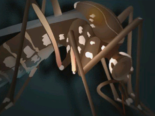
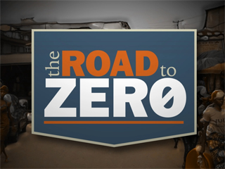
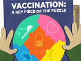
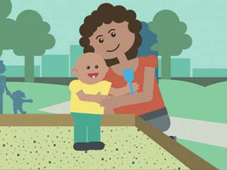
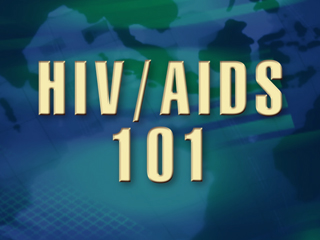

I Never Get The Flu (1:00)
 ShareCompartir
ShareCompartir
I Never Get The Flu
If you think 2009 H1N1 flu can't affect you, your family, or your friends, think again. Take 60 seconds to watch this reminder on why vaccination is so important. All of the excuses any of us make don't stand a chance against this serious disease.
Release Date: 12/15/2009
Source: National Center for Immunization and Respiratory Diseases
Diseases and Conditions Featured Videos
-

Zika Virus Prevention for Puerto Rico Zika Virus Prevention for Puerto Rico
-

Zika Virus 101
-
Adult Vaccines Adult Vaccines
-

The Road to Zero The Road to Zero
-
Shana's Story: Let's Stop HIV Together Shana's Story: Let's Stop HIV Together
-
Tommy's Story: Let's Stop HIV Together Tommy's Story: Let's Stop HIV Together
-

Ebola and Contact Tracing Ebola and Contact Tracing
-

A Key Piece of the Puzzle: Vaccinations A Key Piece of the Puzzle: Vaccinations
-

Babies on the Move: Protecting Babies with Vaccination Babies on the Move: Protecting Babies with Vaccination
-
Screen for Life: Meryl Streep Screen for Life: Meryl Streep
-
Parents Want To Do What′s Best Parents Want To Do What′s Best
-
Let's Stop HIV Together Let's Stop HIV Together
-
Let's Stop HIV Together: Jamar Rogers Let's Stop HIV Together: Jamar Rogers
-

HIV/AIDS 101 HIV/AIDS 101
-
Zika Virus Prevention for Puerto Rico
-
Zika Virus 101
-
Adult Vaccines
-
The Road to Zero
-
Shana's Story: Let's Stop HIV Together
-
Tommy's Story: Let's Stop HIV Together
-
Ebola and Contact Tracing
-
A Key Piece of the Puzzle: Vaccinations
-
Babies on the Move: Protecting Babies with Vaccination
-
Screen for Life: Meryl Streep
-
Parents Want To Do What′s Best
-
Let's Stop HIV Together
-
Let's Stop HIV Together: Jamar Rogers
-
HIV/AIDS 101
More Information
Send Us Feedback
What do you think of our videos? Your feedback about CDC-TV and our videos is very important to us. Send us a comment about our videos.
- Page last reviewed: June 18, 2014
- Page last updated: June 18, 2014
- Content source:
- Centers for Disease Control and Prevention
- Page maintained by: Office of the Associate Director for Communication, Division of News and Electronic Media